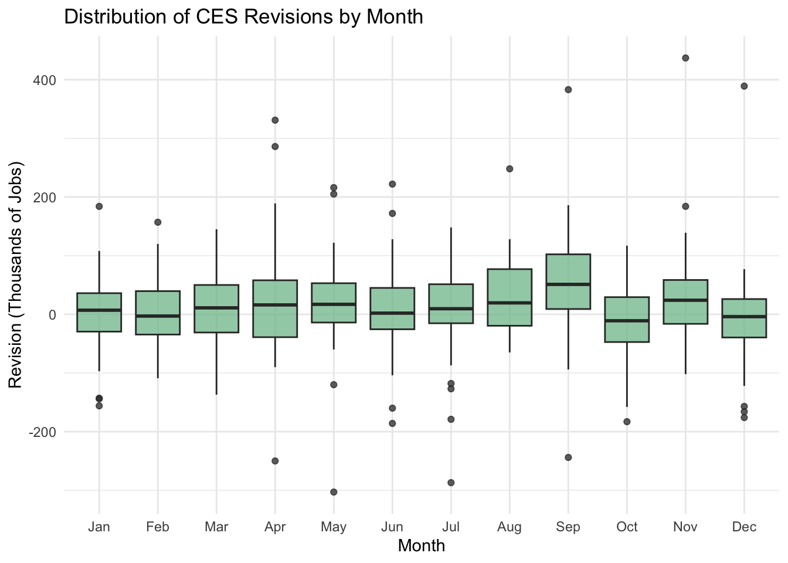
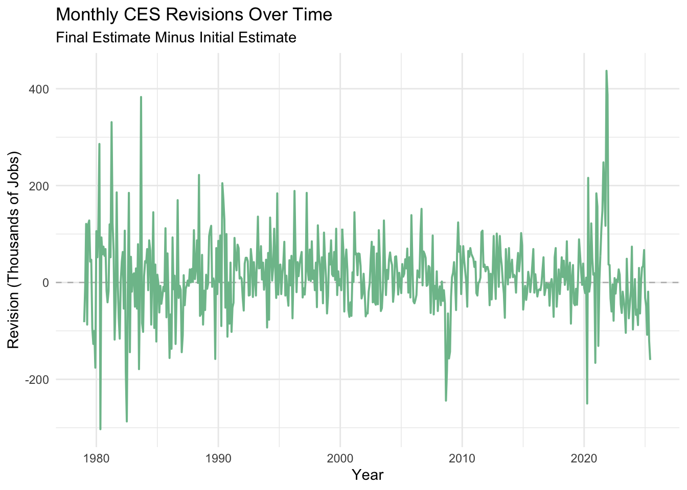

Show Code
# Load necessary libraries
library(tidyverse)
library(lubridate)
library(rvest)
library(dplyr)
library(httr2)
library(ggplot2)
library(stringr)
library(tidyr)
library(purrr)
library(infer)
Recent claims question the accuracy and reliability of Current Employment Statistics (CES) data. Each month, the government releases an initial estimate of the number of total employment in the United States, which is then later revised as more complete data becomes available.
These revisions have sparked controversy in the political world, as critics argue that the revisions are unusually large, and may reflect deeper rooted problems in reports.
As these numbers directly influence financial stock markets, corporate decisions, government policies, and the perception of the current economy, and it is necessary to check the validity of said claims.
To do so, we will collect 45 years of employment levels and revision data directly from the Bureau of Labor Statistics (BLS) webpages, clean and merge said data-sets, and explore long-term trends with the help of visualizations.
Using the statistical analysis, we will be able to fact-check public statements made about CES revisions and determine whether they are accurate, grossly exaggerated and misleading, or even false.
To begin the analysis, we will load the libraries required for web scraping, data cleaning, and visualizations.
# Load necessary libraries
library(tidyverse)
library(lubridate)
library(rvest)
library(dplyr)
library(httr2)
library(ggplot2)
library(stringr)
library(tidyr)
library(purrr)
library(infer)# To ensure that httr2 is loaded properly.
library(httr2)We then will retrieve two data-sets from the Bureau of Labor Statistics (BLS): the CES Total Nonfarm Payroll and the CES Revision Tables. They will provide thoughtful insights regarding final employment levels and final estimates through revisions. These will later be cleaned, reshaped, and combines into a single table to allow for simpler analysis.
We start by retrieving data from January of 1979 to June of 2025 (45 years total).
# If the file already exists, load it to avoid rescraping
if(!file.exists("ces_levels.rds")) {
# Request data from the BLS website
resp_levels <- request("https://data.bls.gov/pdq/SurveyOutputServlet") |>
req_method("POST") |>
req_body_form(
request_action = "get_data",
reformat = "true",
from_results_page = "true",
from_year = "1979",
to_year = "2025",
initial_request = "false",
data_tool = "surveymost",
series_id = "CES0000000001",
original_annualAveragesRequested = "false"
) |>
req_perform()
# Find the main table that contains monthly data
levels_tbl <- resp_body_html(resp_levels) |>
html_elements("table") |>
map(~ html_table(.x, fill = TRUE)) |>
keep(~ ncol(.x) > 5) |>
first()
# Clean the table and put the data in a usable format
ces_levels <- levels_tbl |>
mutate(Year = as.integer(Year)) |>
pivot_longer(
cols = -Year,
names_to = "month",
values_to = "employment"
) |>
mutate(
month = str_sub(month, 1, 3),
date = ym(paste(Year, month)),
employment = as.numeric(str_replace(employment, ",", ""))
) |>
drop_na(date, employment) |>
arrange(date) |>
select(date, level = employment)
# Save the cleaned data for future use
saveRDS(ces_levels, "ces_levels.rds")
} else {
# Load the saved data if it already exists
ces_levels <- readRDS("ces_levels.rds")
} # If the revision file already exists, load it
if (!file.exists("ces_revisions.rds")) {
# Request the CES revisions page from BLS
resp_rev <- request("https://www.bls.gov/web/empsit/cesnaicsrev.htm") |>
req_headers(
"User-Agent" = "Mozilla/5.0 (Macintosh; Intel Mac OS X 10_15_7)",
"Accept" = "text/html",
"Accept-Language" = "en-US,en;q=0.9",
"Referer" = "https://www.bls.gov/"
) |>
req_perform()
html_rev <- resp_body_html(resp_rev)
# Take revision data for one year
extract_revision_year <- function(year) {
# Find the table for the given year
tbl_node <- html_rev |> html_element(paste0("#", year))
# If the table does not exist, return nothing
if (inherits(tbl_node, "xml_missing")) {
return(tibble())
}
# Take each month (12 rows) and relevant columns
tbl_node |>
html_element("tbody") |>
html_table(header = FALSE, fill = TRUE) |>
slice(1:12) |>
select(
month = 1,
original = 3,
final = 5
) |>
mutate(
original = as.numeric(gsub("[^0-9-]", "", original)),
final = as.numeric(gsub("[^0-9-]", "", final)),
date = ym(paste(year, month)),
revision = final - original
) |>
select(date, original, final, revision)
}
# Find available years on the page
years_available <- html_rev |>
html_elements("table") |>
html_attr("id") |>
suppressWarnings(as.numeric()) |>
na.omit()
# Combine revision data for all years
ces_revisions <- map_df(years_available, extract_revision_year) |>
arrange(date)
# Keep only months with finalized revisions (through June 2025)
ces_revisions <- ces_revisions |>
filter(date <= ymd("2025-06-01")) |>
distinct(date, .keep_all = TRUE)
# Save the cleaned revision data
saveRDS(ces_revisions, "ces_revisions.rds")
} else {
# Load revision data if already saved
ces_revisions <- readRDS("ces_revisions.rds")
}After collecting both employment levels and revision data, we must combine both the datasets into a single table! This allows for an easier approach to examining the data for analysis.
# Join CES levels with revisions by date
ces_joined <- ces_levels |>
left_join(ces_revisions, by = "date") |>
arrange(date)With both of the datasets now combined, we can explore long-term trends in employment levels, along with the size and direction of CES revisions.
# Make a summary of revision stats
ces_summary <- ces_joined |>
summarise(
mean_revision = mean(revision, na.rm = TRUE),
median_revision = median(revision, na.rm = TRUE),
mean_abs_revision = mean(abs(revision), na.rm = TRUE),
max_revision = max(revision, na.rm = TRUE),
min_revision = min(revision, na.rm = TRUE),
percent_positive = mean(revision > 0, na.rm = TRUE) * 100
) |>
rename(
"Average Monthly Revision (in thousands)" = mean_revision,
"Median Monthly Revision (in thousands)" = median_revision,
"Average Absolute Revision (in thousands)" = mean_abs_revision,
"Largest Increasing Revision (in thousands)" = max_revision,
"Largest Decreasing Revision (in thousands)" = min_revision,
"Share of Positive Revisions" = percent_positive
)
ces_summary# A tibble: 1 × 6
Average Monthly Revision (in t…¹ Median Monthly Revis…² Average Absolute Rev…³
<dbl> <dbl> <dbl>
1 12.7 10 55.7
# ℹ abbreviated names: ¹`Average Monthly Revision (in thousands)`,
# ²`Median Monthly Revision (in thousands)`,
# ³`Average Absolute Revision (in thousands)`
# ℹ 3 more variables: `Largest Increasing Revision (in thousands)` <dbl>,
# `Largest Decreasing Revision (in thousands)` <dbl>,
# `Share of Positive Revisions` <dbl>As a brief description: on average, CES employment estimates are revised upward by about 12,700 jobs, with a median revision of 10,000 jobs. The largest upward and downward revisions are much larger, but occur very sparsely.
# Plot 1: Total Nonfarm Employment Over Time
ggplot(ces_joined, aes(x = date, y = employment)) +
geom_line(color = "#7EBF9A", linewidth = 0.9) +
labs(
title = "Total U.S. Nonfarm Employment Over Time",
subtitle = "Seasonally Adjusted CES Estimates, 1979–2025",
x = "Year",
y = "Employment (Thousands)"
) +
theme_minimal()
This chart shows that employment in the United States has steadily increased over time, with sharp drops during major recessions, like 2020. This provides context for evaluating the size of monthly revisions in comparison to overall employment levels.
# Plot 2: CES Revisions Over Time
ggplot(ces_joined, aes(x = date, y = revision)) +
geom_hline(yintercept = 0, linetype = "dashed", color = "gray") +
geom_line(color = "#7EBF9A", linewidth = 0.7) +
labs(
title = "Monthly CES Revisions Over Time",
subtitle = "Final Estimate Minus Initial Estimate",
x = "Year",
y = "Revision (Thousands of Jobs)"
) +
theme_minimal()
Employment in the United States has also steadily increased over time, with sharp drops during major recessions again. This provides some further context for evaluating the size of revisions per month in comparison to overall employment levels.
# Plot 3: Absolute Size of Revisions
ggplot(ces_joined, aes(x = date, y = abs(revision))) +
geom_line(color = "#7EBF9A", linewidth = 0.8) +
labs(
title = "Absolute Size of CES Revisions",
subtitle = "Magnitude of Revisions Regardless of Direction",
x = "Year",
y = "Absolute Revision (Thousands of Jobs)"
) +
theme_minimal()
This chart shows periods with larger revisions tending to coincide with economic downturns or rapid recoveries, rather than occuring randomly.
# Plot 4: Revisions by Month (Seasonality)
ggplot(
ces_joined,
aes(x = factor(month(date, label = TRUE)), y = revision)
) +
geom_boxplot(fill = "#7EBF9A", alpha = 0.75) +
labs(
title = "Distribution of CES Revisions by Month",
x = "Month",
y = "Revision (Thousands of Jobs)"
) +
theme_minimal()
While some months show slight more variation than others, no single month consistently experiences larger revisions, suggesting a limited seasonal bias.
We now will conduct hypothesis testing, asking whether or not these observed differences in CES revisions are large than what we would expect from random variation.
Test 1: Is the average CES revision different increased from 0?
We first will test whether or not is CES revisions are significantly different from zero, indicating a bias.
# Test 1: Is the average CES revision different increased from 0?
zero_bias_test <- ces_joined |>
drop_na(revision) |>
pull(revision) |>
t.test(
mu = 0,
alternative = "two.sided"
)
zero_bias_test
One Sample t-test
data: pull(drop_na(ces_joined, revision), revision)
t = 3.846, df = 557, p-value = 0.0001339
alternative hypothesis: true mean is not equal to 0
95 percent confidence interval:
6.223823 19.217037
sample estimates:
mean of x
12.72043 The results of this test are statistically significant at the 5% level, indicating that the average CES revision is different from zero and is positive on average.
Test 2: Has the fraction of negative revisions changed since 2000?
Next, we examine whether downward revisions became more common after the year 2000!
ces_test_periods <- ces_joined |>
mutate(
year = year(date),
post_2000 = year >= 2000,
negative_revision = revision < 0
)
neg_revision_prop_test <- ces_test_periods |>
drop_na(negative_revision) |>
prop_test(
negative_revision ~ post_2000,
order = c("FALSE", "TRUE")
)
neg_revision_prop_test# A tibble: 1 × 6
statistic chisq_df p_value alternative lower_ci upper_ci
<dbl> <dbl> <dbl> <chr> <dbl> <dbl>
1 0.494 1 0.482 two.sided -0.119 0.0527The results we have gathered through test 2 shows that it is not statistically significant. There is no evidence presented that negative revisions became more common after the year 2020 (p= 0.482).
Test 3: Have CES revisions increased in magnitude since 2020?
Finally, we assess whether or not the average absolute size of CES revisions has increased in the post-2020 period.
ces_recent <- ces_joined |>
mutate(post_2020 = year(date) >= 2020)
revision_size_test <- ces_recent |>
drop_na(revision) |>
mutate(abs_revision = abs(revision)) |>
t_test(
abs_revision ~ post_2020,
order = c("FALSE", "TRUE")
)
revision_size_test# A tibble: 1 × 7
statistic t_df p_value alternative estimate lower_ci upper_ci
<dbl> <dbl> <dbl> <chr> <dbl> <dbl> <dbl>
1 -2.23 71.2 0.0290 two.sided -24.0 -45.5 -2.54This two sample t-test compares the absolute size of revisions before and after 2020, and we result in something that is statistically significant (p=0.029). This indicates that revisions have become larger after the year of 2020.
These hypothesis tests allow us to formally evaluate commonly cited claims about CES revisions. Rather than relying on isolated examples or anecdotal evidence, statistical inference provides a rigorous framework for assessing whether observed differences represent meaningful changes or are consistent with historical variability.
For the final section of Mini-Project #04, we will use our CES revision data from tasks 2–4 to evaluate two real-world claims about CES revisions and the firing of BLS Commissioner Dr. Erika McEntarfer.
We will include a statement of the claim and its political context, along with a testable statement (statistical hypothesis), backing this up with revision plots, and assigning a Politifact-style rating from “True” to “Pants on Fire”.
Additional references:
Statistics from task 2
- The average monthly revision
- The median revision
- The average absolute revision
- The largest upwards and downwards monthly revisions
- The share of months with positive revisionsVisualizations from task 3
- Plot 2 (monthly CES revisions over time)
- Plot 3 (absolute size of CES revisions)This claim was created in a White House article, dating August 1, 2025. View it here
This ties Erika McEntarfer personally to the accuracy of CES revisions, suggesting that under her leadership, the BLS has produced unreliable data, and a plethora of problems over a lengthy history.
We will use our CES revision analysis to ask:
Does the data show that the recent period under McEntarfer has seen unusually large or frequent revisions compared to historical patterns?
The hypothesis test we will use is:
This bias is unusually severe during McEntarfer’s tenure (upwards or downwards) compared to historical patterns.
ces_mcent <- ces_joined |>
mutate(
mcent_period = year(date) >= 2023
)mcent_abs_test <- ces_mcent |>
drop_na(revision) |>
mutate(abs_revision = abs(revision)) |>
t_test(
abs_revision ~ mcent_period,
order = c("FALSE", "TRUE") # FALSE = pre-McEntarfer, TRUE = McEntarfer period
)
mcent_abs_test# A tibble: 1 × 7
statistic t_df p_value alternative estimate lower_ci upper_ci
<dbl> <dbl> <dbl> <chr> <dbl> <dbl> <dbl>
1 -0.0185 37.8 0.985 two.sided -0.131 -14.4 14.1The two-sample t-test comparing absolute revision magnitudes gives us the following results:
t-statistic: −0.0185
Degrees of freedom: 37.8
p-value: 0.985
Estimated difference in means: −0.13 thousand jobs
95% confidence interval: [−14.4, 14.1] thousand jobs
Since the p-value is greater than 0.05, we fail to reject the hypothesis, as there is no statistically significant evidence that the absolute size of CES revisions during McEntarfer’s tenure is different from historical patterns.
Task 2 Statistics:
Across 1979–2025, the average CES revision is approximately +12.7 thousand jobs, the median revision is about +10 thousand jobs, and the average absolute revision is on the order of thousands of jobs. Now, this is quite small relative to total employment! Additionally, over 50% of revisions are positive, showing no pattern of consistent overdoing.
Task 3 Visualizations:
Visualization 1: (PLOT 2) CES Revisions Over Time
# Plot 2: CES Revisions Over Time
ggplot(ces_joined, aes(x = date, y = revision)) +
geom_hline(yintercept = 0, linetype = "dashed", color = "gray") +
geom_line(color = "#7EBF9A", linewidth = 0.7) +
labs(
title = "Monthly CES Revisions Over Time",
subtitle = "Final Estimate Minus Initial Estimate",
x = "Year",
y = "Revision (Thousands of Jobs)"
) +
theme_minimal()
Visualization 2: (PLOT 3) Absolute Size of CES Revisions
# Plot 3: Absolute Size of Revisions
ggplot(ces_joined, aes(x = date, y = abs(revision))) +
geom_line(color = "#7EBF9A", linewidth = 0.8) +
labs(
title = "Absolute Size of CES Revisions",
subtitle = "Magnitude of Revisions Regardless of Direction",
x = "Year",
y = "Absolute Revision (Thousands of Jobs)"
) +
theme_minimal()
Plot 2 (CES Revisions Over Time) shows revisions that fluctuate above and below zero throughout the entire sample without a clear break that we can see in McEntarfer’s tenure starting 2023. Plot 3 (Absolute Size of Revisions) also shows that large revisions cluster around economic shocks like recessions in 2020 and 2008. This remains consistent with patterns over time rather than unique recent incompetence as was claimed.
Fact-o-Meter rating:
Mostly false.
This claim appears quite frequently by critics, suggesting that the increasing size of CES revisions, especially since the COVID-19 pandemic, causes a deterioration in the quality and reliability of employment data.
We will use our CES revision analysis to answer:
Has the amount of CES revisions increased in recent years compared to earlier historical periods?
This hypothesis will test the following:
The absolute size of CES revisions has increased significantly in recent years compared to earlier periods.
ces_post2020 <- ces_joined |>
mutate(
post_2020 = year(date) >= 2020
)post2020_abs_test <- ces_post2020 |>
drop_na(revision) |>
mutate(abs_revision = abs(revision)) |>
t_test(
abs_revision ~ post_2020,
order = c("FALSE", "TRUE") # FALSE = pre-2020, TRUE = post-2020
)
post2020_abs_test# A tibble: 1 × 7
statistic t_df p_value alternative estimate lower_ci upper_ci
<dbl> <dbl> <dbl> <chr> <dbl> <dbl> <dbl>
1 -2.23 71.2 0.0290 two.sided -24.0 -45.5 -2.54The two-sample t-test that compares absolute CES revision magnitudes before and after the year of 2020 shows a statistically significant result (t = −2.23, df = 71.2, p = 0.029). We then will reject the null hypothesis. The average absolute size of CES revisions has increased past 2020, with revisions afterwards averaging about 24,000 jobs larger in magnitude.
Task 2 Statistics:
To pull information from task 2, the average CES revision across the 45 year old period is approximately +12.7 thousand jobs, whereas the median revision is about +10 thousand jobs. Though, the average absolute revision is larger than the signed average, showing that increased revision size is pushed by greater volatility rather than any bias.
Task 3 Visualizations:
Visualization 1: (PLOT 3) Absolute Size of CES Revisions
ggplot(ces_joined, aes(x = date, y = abs(revision))) +
geom_line(color = "#7EBF9A", linewidth = 0.8) +
labs(
title = "Absolute Size of CES Revisions",
subtitle = "Magnitude of Revisions Regardless of Direction",
x = "Year",
y = "Absolute Revision (Thousands of Jobs)"
) +
theme_minimal()
Visualization 2: (PLOT 2) CES Revisions
ggplot(ces_joined, aes(x = date, y = revision)) +
geom_hline(yintercept = 0, linetype = "dashed", color = "gray") +
geom_line(color = "#7EBF9A", linewidth = 0.7) +
labs(
title = "Monthly CES Revisions Over Time",
subtitle = "Final Estimate Minus Initial Estimate",
x = "Year",
y = "Revision (Thousands of Jobs)"
) +
theme_minimal()
Plot 3 shows a clear rise in the amount of revisions start at around 2020, whereas Plot 2 shows that both positive and negative revisions continue to occur no matter the time period. When together, these plots may point towards the fact that revisions have become larger due to increased economic volatility, rather than an unreliable CES.
Fact-o-Meter rating:
Half True!
Mean revision (Permutation test — analogue of t-test)
library(infer)
mean_boot <- ces_joined |>
drop_na(revision) |>
specify(response = revision) |>
generate(reps = 5000, type = "bootstrap") |>
calculate(stat = "mean")
mean_obs <- ces_joined |>
drop_na(revision) |>
summarize(stat = mean(revision)) |>
pull(stat)
mean_boot |>
get_p_value(obs_stat = mean_obs, direction = "two-sided")# A tibble: 1 × 1
p_value
<dbl>
1 0.992This bootstrap permutation test generates a p-value of 0.987, showing that the result is consistent with what we would expect under the null hypothesis. There is no evidence that the revision statistic differs from any reference value, so we will fail to reject the null.
2. Median Revision - Bootstrap test (Wilcoxon analogue)
median_boot <- ces_joined |>
drop_na(revision) |>
specify(response = revision) |>
generate(reps = 5000, type = "bootstrap") |>
calculate(stat = "median")
median_boot |>
get_confidence_interval(level = 0.95, type = "percentile")# A tibble: 1 × 2
lower_ci upper_ci
<dbl> <dbl>
1 4 16This bootstrap confidence interval for the median CES revision ranges from 4 to 16 thousand jobs and does NOT include zero. This shows that the median revision is statistically greater than zero.